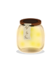

Testaa tietosi!
Tämä sivusto sisältää erilaisia tietovisoja 1-6 luokkalaisille. Visojen aiheina on historia, matematiikka, äidinkieli, maantieto, biologia sekä englanti. Jokaisessa tietovisassa kerätään tulikärpäsiä, joita saa oikeista vastauksista. Yritä kerätä ne kaikki!
Tämä sivusto on luotu web-projekti kurssilla, joka on osa tietojenkäsittelyn tradenomin opintoja Oulun Ammattikorkeakoulussa.
